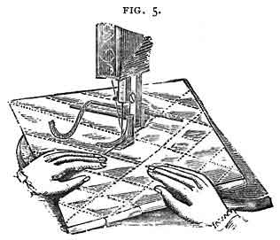
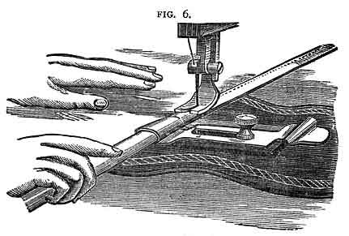
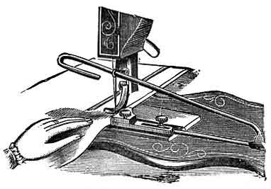
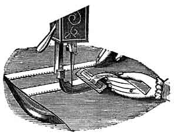
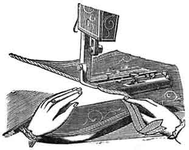
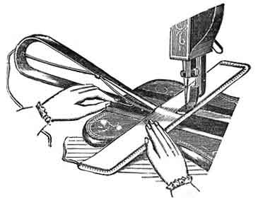
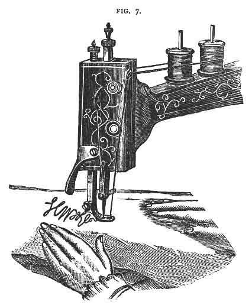

Make a crease across the material, and sew a straight line upon it. Then adjust the gauge to the required width for the next line of sewing, and guide the fabric with the line already sewn directly under the gauge arm.

The hemmer must be secured by means of the thumb screw as shown in the illustration with the coil through which the material passes fixed immediately in front of the presser foot, regulate the distance of the sewing from the edge of the hem, by sliding the hemmer further away from or closer to the line of the needle. Take hold of the edge to be hemmed and draw it tightly into the hemmer from the side, and by drawing it backwards and forwards a few times work into the folds of the hemmer, drop the presser foot, and commence to sew, first assuring yourself that the hem is properly folded. As the fabric enters the hemmer, guide it with the right hand, holding the edge slightly turned over in the direction of the hem. Broad hems may be made by turning them down by hand and using the plain guide.
Adjust the hemmer to the presser bar; commence the hem by folding it at the end, then pass a thread through it by means of a needle, drawing the thread and the fabric into the hemmer (or pass the edge of the fabric into the hemmer without a thread), lower the lifter and commence sewing, guiding the edge of the fabric with the right hand. If the edge unfolds out of the hemmer, move the fabric to the RIGHT, if it folds too much into the hemmer, move the fabric to the LEFT.

The tucker is attached to the machine by means of the right hand thumb screw, which also answers for securing in its place the adjustable gauge, while the one at the left is used to hold the under marking lever in its place. After having been adjusted to the proper position to produce the required width of tuck, the loop which attaches to the needle-bar, by means of the needle-clamp nut, and through which the upper marking-lever passes, should be so adjusted that the notch in the lever shall only press heavily enough upon the goods to produce a distinct crease; any required width of tuck may be produced by properly adjusting the gauge and marking lever.

Adjust the trimmer to the presser bar; place the braid, velvet, or ribbon in the slot, and under the needle; then guide the fabric and trimming to stitch on the desired line or pattern.

Adjust the binder to the desired width of binding, fix it firmly to the machine with the thumb screw; place the end of the binding over the feed points, and its edges under the clips; then place the fabric between the clips, and guide it against the binder. If the sewing is not on the edge of the binding, loosen the screw, and move the binder a little to the right or left until it is in the right position; the under-clip may be adjusted to fold the binding wider on the under than the upper side of the fabric.

Adjust the corder-foot to the presser bar, pass the cord into the eye of the guide, which is held in the left hand between the folds of the fabric, with its end opposite the first groove in the foot; in placing each succeeding cord, guide the fabric with the last cord sewn in the second groove of the foot. In cording, always turn a square corner while the needle rests in the fabric.

Adjust the braider to the presser-bar, pass the braid through the eye at the top of the arm, then take a short piece of thread and pass the ends through the slot in the braider, forming a loop; place the end of the braid into the loop, and drawing the thread through the slot, the braid will pass through with it (Or pass the braid through by pushing the end with the point of a needle.) Stamp or trace the design on the fabric, and guide it as required.